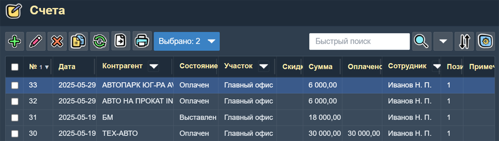
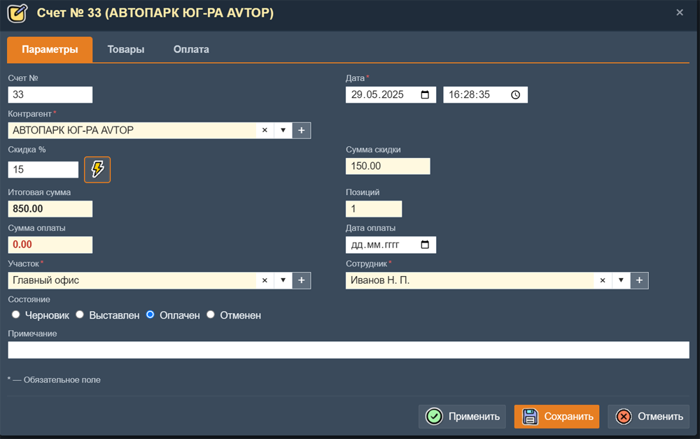
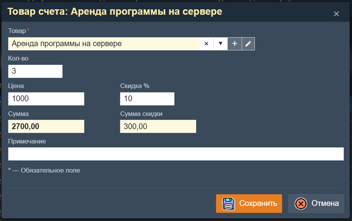
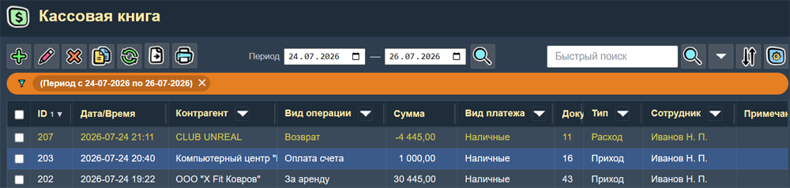
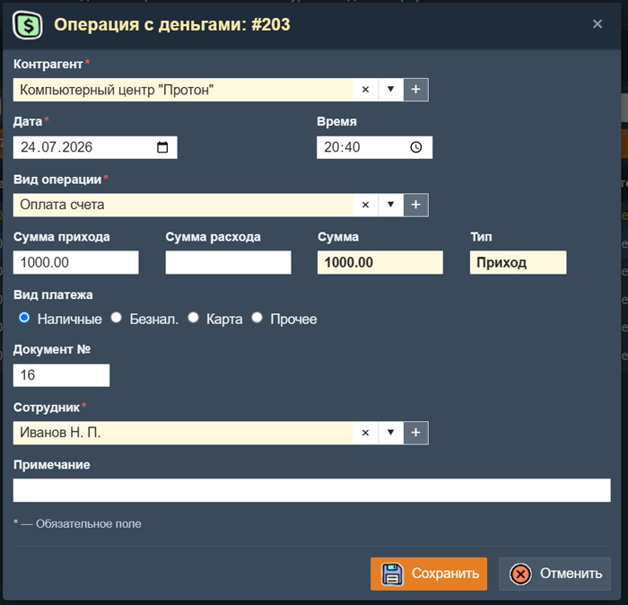
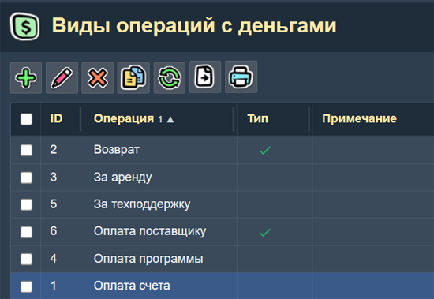

Документы и финансы
Раздел Документы и финансы объединяет страницы, связанные с финансовыми документами, учётом платежей и денежными операциями. Доступ к этим страницам осуществляется через главное меню — пункт Документы.
Счета
Страница Счета предназначена для выставления счетов клиентам. В таблице отображается список всех счетов.

Таблица счетов.
Таблица "Счета" имеет следующие колонки:
- № — номер счета (формируется автоматически).
- Дата — дата выставления счёта.
- Контрагент — контрагент, которому выставлен счёт.
- Состояние — состояние счёта.
- Участок — участок (подраздление, склад).
- Скидка — общая скидка счёта в проценах.
- Сумма — итоговая сумма счёта.
- Оплачено — сумма оплаты данного счёта.
- Сотрудник — сотрудник ответственный за этот счёт.
- Позиций — количество товарных позицый в счёте.
- Примечание — дополнительная информация.
Поиск
При помощи поля "Поиск" в таблице можно искать по любому полю записи о счете. В панели "Условия поиска" можно точно задать поля, по которым будет производится поиск.
В заголовках колонок "Контрагент", "Состояние", "Участок" и "Сотрудник" имеется кнопка включения "колоночного фильтра". При нажатии на эту кнопку появляется панель выбора одного или нескольких значений поля для фильтрации. Таким образом можно, например, быстро отфильтровать все счета заданного Контрагента.
Печать и экспорт
Из таблицы счетов можно распечатать:
- Список счетов — перечень всех (или отмеченных) счетов.
- Счет — форма счета для печати на принтере.
- Договор — договор продажи.
- Акт - акт оказания услуг.
- Комм. предложение - коммерческое предложение.
Все виды печатных документов можно настроить по вашим требованиям, а также можно добавить другие виды документов. Смотрите страницу "Настройка документов".
Форма счёта

Форма редактирования счёта.
Форма "Cчёт" содержит следующие поля:
- Счет № — формируется автоматически, может быть скорректирован вручную.
- Дата — дата и время создания счёта.
- Клиент — выбор контрагента из справочника Контрагенты. При выборе контрагента раотает поиск (фильтр).
- Скидка — величина скидки в процентах. Используется в записях о товарах счета по умолчанию. Кнопка "Установить скидку" (правее этого поля) предназначена для установки этой скидки у всех товаров счета.
- Сумма скидки — итоговая сумма скидки счёта. Считается по всем товарам счета.
- Итоговая сумма — итоговая сумма счёта. Считается по всем товарам счета.
- Позиций — количество товарных позиций. Считается по всем товарам счета.
- Cумма оплаты — сумма оплаты счета. Считается по всем записям об оплате счета.
- Дата оплаты — дата оплаты счета. последней оплаты этого счета.
- Участок — выбор участка из справочника.
- Сотрудник — сотрудник, создавший этот счет.
- Состояние — состояние счета. Выбирается из нескольких возможных вариантов.
- Примечание — произвольный текст.
Вкладка "Товары"
На этой вкладке находится таблица со списком товаров счета. Форма записи о товаре счета:

Поля записи о товаре счета:
- Товар — выбор товара (или услуги) из справочника. При выборе работает фильтр по введенной строке. При помощи кнопки "карандаш" (справа от этого поля) можно открыть форму выбранного товара.
- Количество — количество товара в счете.
- Цена — цена товара. По умолчанию устанавливается розничная цена данного товара.
- Скидка — скидка на этот товар в процентах. По умолчанию устанавливается величина скидки, которая указана на вкладке "Параметры" счета.
- Сумма — сумма за товар с учетом скидки.
- Сумма скидки — сумма скидки на товар.
- Примечание — произвольное примечание о товаре.
Вкладка "Оплата"
На этой вкладке находится таблица со списком платежей счета. Форма записи об оплате счета описана в разделе "Кассовая книга" (ниже).
Коммерческие предложения
Страница Коммерческие предложения устроена аналогично странице "Счета". Коммерческие предложения предназначены для предварительного согласования условий с клиентом и не влияют на бухгалтерский и складской учёт.
Кассовая книга
Страница Кассовая книга предназначена для учёта всех приходных и расходных денежных операций.

Страница "Кассовая книга".
В таблице Кассовой книге имеются следующие колонки:
- Дата, впемя — дата и время операции.
- Контрагент — связанный контрагент.
- Вид операции — вид операции с деньгами.
- Сумма — сумма операции.
- Вид платежа — выбор из нескольких видов платжа: наличные, банк, карта.
- Тип — приход или расход.
- Документ — ссылка на связанный документ (например, счёт или накладную).
- Сотрудник — сотрудник, создавший эту запись об операции с деньгами.
- Примечание — дополнительная информация.
Поиск и печать
При помощи поля "Поиск" в таблице можно искать по любому полю записи об операции. В панели "Условия поиска" можно точно задать поля, по которым будет производится поиск.
В заголовках колонок "Контрагент", "Вид операции", "Вид платежа", "Тип" и "Сотрудник" имеется кнопка включения "колоночного фильтра". При нажатии на эту кнопку появляется панель выбора одного или нескольких значений поля для фильтрации. Таким образом можно, например, быстро отфильтровать все платежи заданного Контрагента.
В тулбаре этой страницы есть два поля выбора даты"Период ... по ...". В них можно задать период времени для фильтрации записей в таблице.
Печать списка операций Кассовой книги делается с учетом всех включенных фильтров. В том числе и с учетом заданного периода времени. При печати под списком записей кассовой книги выводятся итоговые суммы по всем операциям: "Итого приход", "Итого расход" и "Итого сумма". Множество вариантов фильтрации записей кассовой книги позволяют получать самые разные отчеты по операциям с деньгами.
Форма операции с деньгами

Форма редактирования записи кассовой книги.
Форма записи об операции с деньгами кассовой книги содержит:
- Контрагент — выбор из справочника контрагентов.
- Дата — дата операции.
- Время — время операции.
- Вид операции — выбор вида операции из справочника.
- Сумма прихода — поле для ввода суммы прихода.
- Сумма расхода — поле для ввода суммы расхода.
- Сумма — сумма операции равная сумма прихода минус сумма расхода.
- Тип — записит от вида операции: "Приход" или "Расход".
- Вид платежа — выбор: наличные, безнал, карта или прочее.
- Документ — номер связанного документа.
- Сотрудник — сотрудник, создавший эту запись об операции с деньгами.
- Примечание — произвольный текст.
Виды операций с деньгами
Страница Виды операций с деньгами представляет собой простой справочник, в котором задаются наименования и типы денежных операций. Значения из этого справочника используются в форме кассовой книги для выбора вида операции. Вы можете добавлять в этот справочник любые нужные вам виды операций.

Таблица справочника видов операций с деньгами.
Колонки таблицы:
- Операция — название вида операции.
- Тип — признак (флаг) "Расход".
- Примечание — название вида операции.